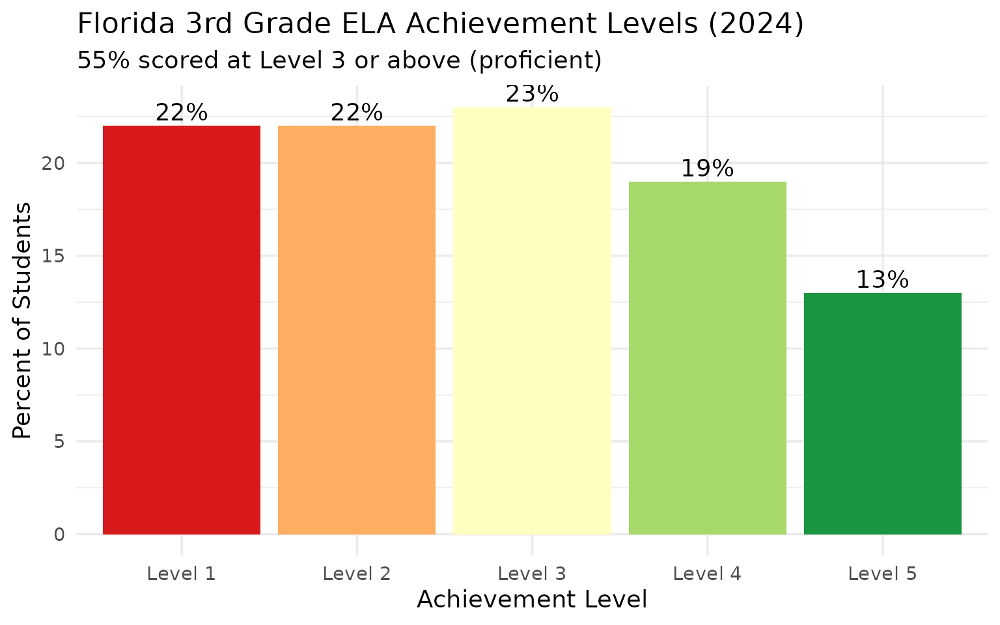
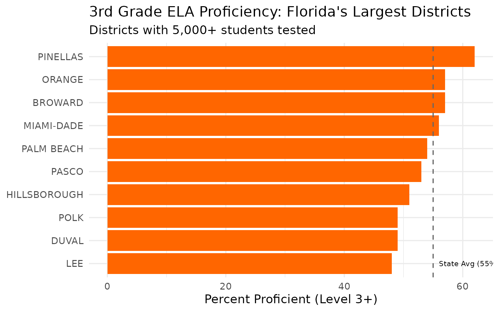
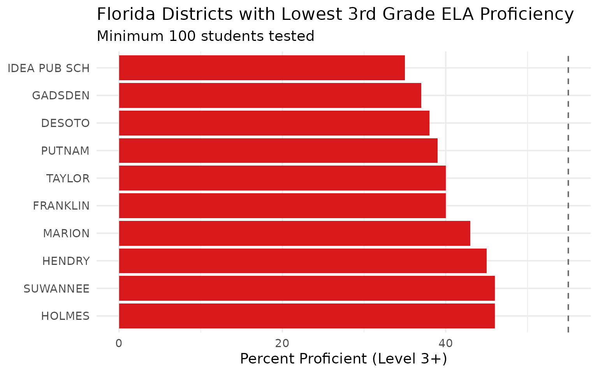
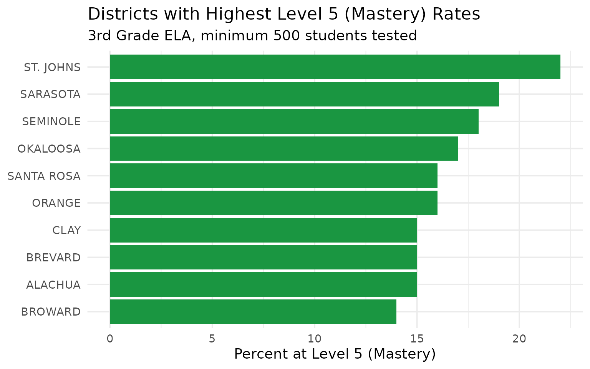
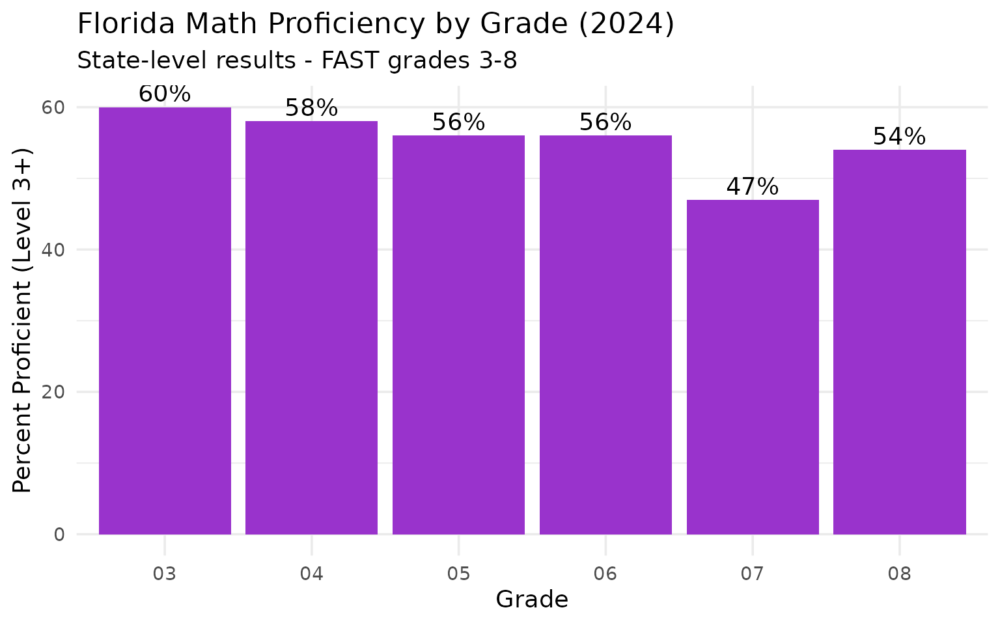
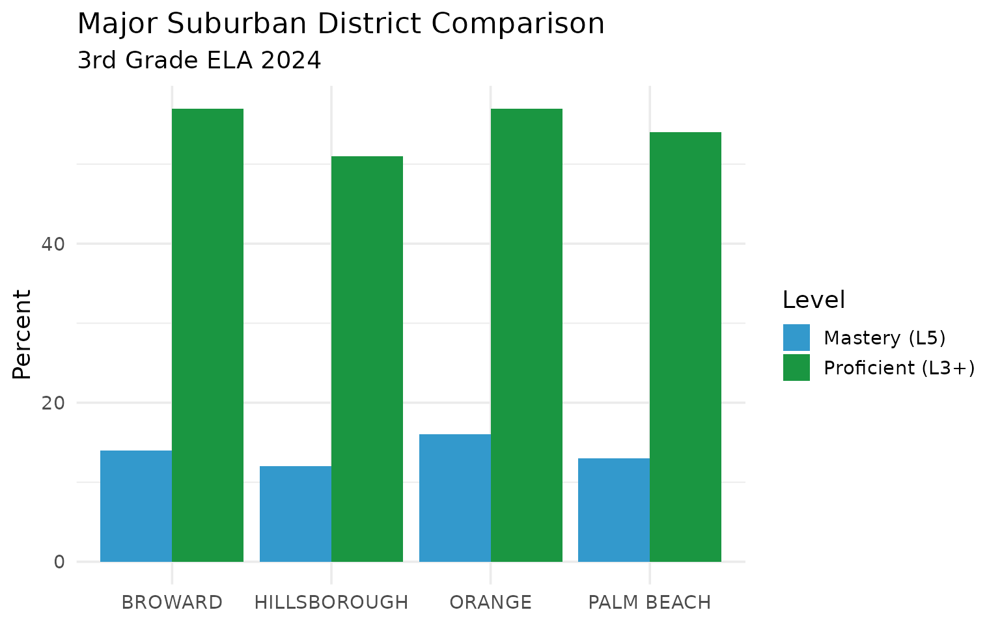
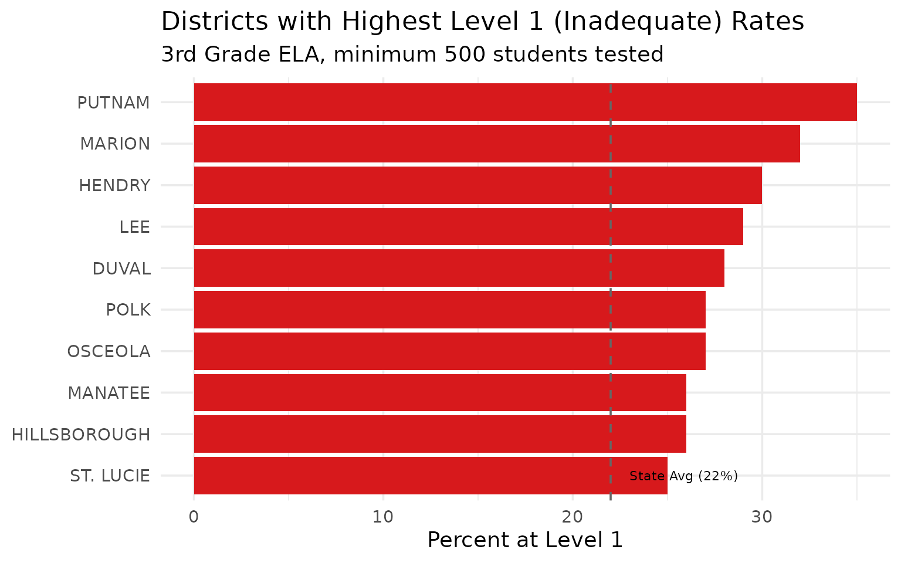
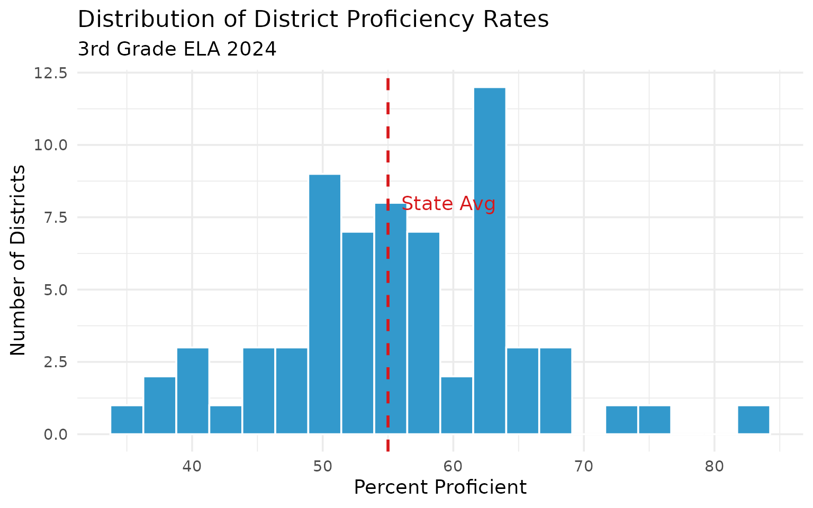
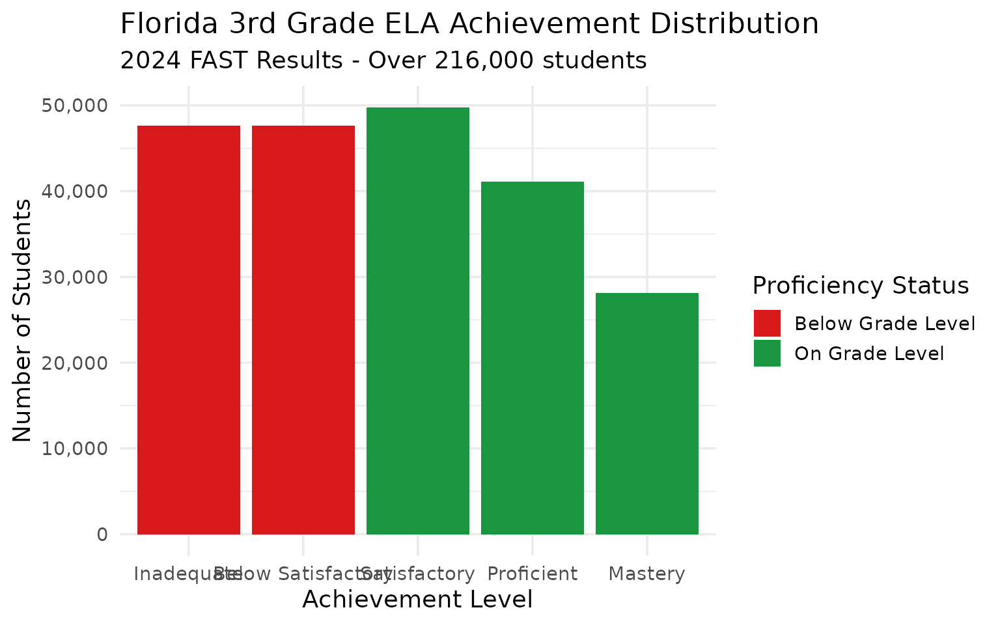
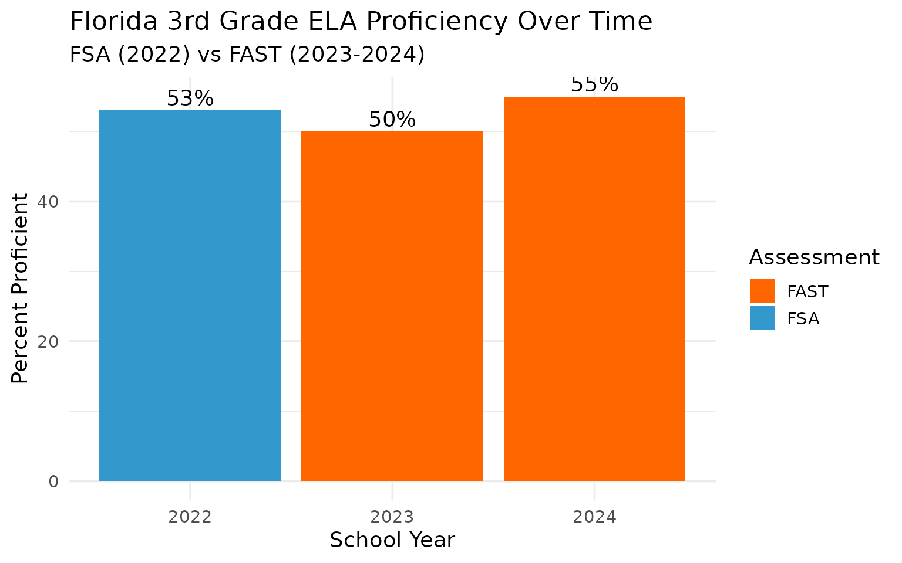

15 Insights from Florida Assessment Data
Source:vignettes/florida-assessment.Rmd
florida-assessment.Rmd
library(flschooldata)
library(dplyr)
library(tidyr)
library(ggplot2)
theme_set(theme_minimal(base_size = 14))This vignette explores Florida’s assessment data from the FAST (Florida Assessment of Student Thinking) and FSA (Florida Standards Assessments) programs, covering grades 3-10 in ELA and grades 3-8 in Mathematics.
Assessment Systems: - FSA (Florida Standards Assessments): 2015-2022 - FAST (Florida Assessment of Student Thinking): 2023-present
Achievement Levels: - Level 1: Inadequate - Level 2: Below Satisfactory - Level 3: Satisfactory - Level 4: Proficient - Level 5: Mastery
Students at Level 3 or above are considered “on grade level” or proficient.
1. Just over half of Florida third graders read on grade level
In 2024, 55% of Florida 3rd graders scored at Level 3 or above on the FAST ELA Reading assessment.
assess_2024 <- fetch_assessment(2024, "ela", grade = 3, level = "district",
tidy = FALSE, use_cache = TRUE)
state_g3 <- assess_2024 |>
filter(is_state) |>
select(end_year, subject, grade, n_tested, pct_proficient,
pct_level_1, pct_level_2, pct_level_3, pct_level_4, pct_level_5)
state_g3
#> # A tibble: 1 × 10
#> end_year subject grade n_tested pct_proficient pct_level_1 pct_level_2
#> <dbl> <chr> <chr> <dbl> <dbl> <dbl> <dbl>
#> 1 2024 ELA 03 216473 55 22 22
#> # ℹ 3 more variables: pct_level_3 <dbl>, pct_level_4 <dbl>, pct_level_5 <dbl>
levels_long <- state_g3 |>
pivot_longer(cols = starts_with("pct_level"),
names_to = "level",
values_to = "pct") |>
mutate(level = gsub("pct_level_", "Level ", level),
level = factor(level, levels = paste("Level", 1:5)))
ggplot(levels_long, aes(x = level, y = pct, fill = level)) +
geom_col() +
geom_text(aes(label = paste0(pct, "%")), vjust = -0.3) +
scale_fill_manual(values = c("#D7191C", "#FDAE61", "#FFFFBF", "#A6D96A", "#1A9641")) +
labs(
title = "Florida 3rd Grade ELA Achievement Levels (2024)",
subtitle = "55% scored at Level 3 or above (proficient)",
x = "Achievement Level",
y = "Percent of Students"
) +
theme(legend.position = "none")
2. Miami-Dade outperforms the state average
Despite being the largest district with over 25,000 3rd graders tested, Miami-Dade’s 56% proficiency rate exceeds the state average.
large_districts <- assess_2024 |>
filter(!is_state, n_tested > 5000) |>
arrange(desc(n_tested)) |>
select(district_name, n_tested, pct_proficient) |>
head(10)
large_districts
#> # A tibble: 10 × 3
#> district_name n_tested pct_proficient
#> <chr> <dbl> <dbl>
#> 1 MIAMI-DADE 25178 56
#> 2 BROWARD 18457 57
#> 3 HILLSBOROUGH 16802 51
#> 4 ORANGE 15743 57
#> 5 PALM BEACH 14593 54
#> 6 DUVAL 10095 49
#> 7 POLK 9295 49
#> 8 LEE 7644 48
#> 9 PINELLAS 6654 62
#> 10 PASCO 6511 53
large_districts |>
mutate(district_name = forcats::fct_reorder(district_name, pct_proficient)) |>
ggplot(aes(x = pct_proficient, y = district_name)) +
geom_col(fill = "#FF6600") +
geom_vline(xintercept = 55, linetype = "dashed", color = "gray40") +
annotate("text", x = 56, y = 1, label = "State Avg (55%)", hjust = 0, size = 3) +
labs(
title = "3rd Grade ELA Proficiency: Florida's Largest Districts",
subtitle = "Districts with 5,000+ students tested",
x = "Percent Proficient (Level 3+)",
y = NULL
)
3. Small districts lead in proficiency rates
Several smaller counties have the highest proficiency rates in the state, with some exceeding 70%.
top_proficient <- assess_2024 |>
filter(!is_state, n_tested >= 100) |>
arrange(desc(pct_proficient)) |>
select(district_name, n_tested, pct_proficient) |>
head(10)
top_proficient
#> # A tibble: 10 × 3
#> district_name n_tested pct_proficient
#> <chr> <dbl> <dbl>
#> 1 FSU LAB SCH 238 83
#> 2 ST. JOHNS 3706 76
#> 3 FAU LAB SCH 219 74
#> 4 NASSAU 931 68
#> 5 SARASOTA 3313 68
#> 6 SEMINOLE 4653 67
#> 7 SANTA ROSA 2198 66
#> 8 SUMTER 765 65
#> 9 WALTON 914 65
#> 10 BAKER 373 64
top_proficient |>
mutate(district_name = forcats::fct_reorder(district_name, pct_proficient)) |>
ggplot(aes(x = pct_proficient, y = district_name)) +
geom_col(fill = "#1A9641") +
geom_vline(xintercept = 55, linetype = "dashed", color = "gray40") +
labs(
title = "Florida's Highest-Performing Districts in 3rd Grade ELA",
subtitle = "Minimum 100 students tested",
x = "Percent Proficient (Level 3+)",
y = NULL
)
4. Rural Panhandle counties face challenges
Many North Florida rural counties have proficiency rates below 50%.
low_proficient <- assess_2024 |>
filter(!is_state, n_tested >= 100) |>
arrange(pct_proficient) |>
select(district_name, n_tested, pct_proficient) |>
head(10)
low_proficient
#> # A tibble: 10 × 3
#> district_name n_tested pct_proficient
#> <chr> <dbl> <dbl>
#> 1 IDEA PUB SCH 395 35
#> 2 GADSDEN 359 37
#> 3 DESOTO 351 38
#> 4 PUTNAM 841 39
#> 5 FRANKLIN 101 40
#> 6 TAYLOR 210 40
#> 7 MARION 3709 43
#> 8 HENDRY 855 45
#> 9 HOLMES 233 46
#> 10 SUWANNEE 450 46
low_proficient |>
mutate(district_name = forcats::fct_reorder(district_name, -pct_proficient)) |>
ggplot(aes(x = pct_proficient, y = district_name)) +
geom_col(fill = "#D7191C") +
geom_vline(xintercept = 55, linetype = "dashed", color = "gray40") +
labs(
title = "Florida Districts with Lowest 3rd Grade ELA Proficiency",
subtitle = "Minimum 100 students tested",
x = "Percent Proficient (Level 3+)",
y = NULL
)
5. Level 5 (Mastery) varies dramatically by district
Some districts have 3x the mastery rate of others.
mastery <- assess_2024 |>
filter(!is_state, n_tested >= 500) |>
arrange(desc(pct_level_5)) |>
select(district_name, n_tested, pct_level_5, pct_proficient) |>
head(10)
mastery
#> # A tibble: 10 × 4
#> district_name n_tested pct_level_5 pct_proficient
#> <chr> <dbl> <dbl> <dbl>
#> 1 ST. JOHNS 3706 22 76
#> 2 SARASOTA 3313 19 68
#> 3 SEMINOLE 4653 18 67
#> 4 OKALOOSA 2516 17 59
#> 5 ORANGE 15743 16 57
#> 6 SANTA ROSA 2198 16 66
#> 7 ALACHUA 2246 15 56
#> 8 BREVARD 5545 15 59
#> 9 CLAY 2978 15 63
#> 10 BROWARD 18457 14 57
mastery |>
mutate(district_name = forcats::fct_reorder(district_name, pct_level_5)) |>
ggplot(aes(x = pct_level_5, y = district_name)) +
geom_col(fill = "#1A9641") +
labs(
title = "Districts with Highest Level 5 (Mastery) Rates",
subtitle = "3rd Grade ELA, minimum 500 students tested",
x = "Percent at Level 5 (Mastery)",
y = NULL
)
6. Proficiency rises through the grades for ELA
Upper grade students have higher ELA proficiency rates than younger students.
all_grades <- fetch_assessment(2024, "ela", grade = NULL, level = "district",
tidy = FALSE, use_cache = TRUE)
grade_state <- all_grades |>
filter(is_state) |>
select(grade, n_tested, pct_proficient) |>
arrange(grade)
grade_state
#> # A tibble: 8 × 3
#> grade n_tested pct_proficient
#> <chr> <dbl> <dbl>
#> 1 03 216473 55
#> 2 04 213136 53
#> 3 05 204219 55
#> 4 06 205644 54
#> 5 07 215426 50
#> 6 08 210730 51
#> 7 09 217743 53
#> 8 10 217930 53
grade_state |>
ggplot(aes(x = grade, y = pct_proficient)) +
geom_col(fill = "#3399CC") +
geom_text(aes(label = paste0(pct_proficient, "%")), vjust = -0.3) +
labs(
title = "Florida ELA Proficiency by Grade (2024)",
subtitle = "State-level results",
x = "Grade",
y = "Percent Proficient (Level 3+)"
)
7. Math proficiency peaks in Grade 4
Mathematics proficiency shows a different pattern, with younger grades performing better.
math_all <- fetch_assessment(2024, "math", grade = NULL, level = "district",
tidy = FALSE, use_cache = TRUE)
math_state <- math_all |>
filter(is_state) |>
select(grade, n_tested, pct_proficient) |>
arrange(grade)
math_state
#> # A tibble: 6 × 3
#> grade n_tested pct_proficient
#> <chr> <dbl> <dbl>
#> 1 03 215911 60
#> 2 04 208115 58
#> 3 05 202721 56
#> 4 06 201312 56
#> 5 07 149404 47
#> 6 08 167946 54
math_state |>
ggplot(aes(x = grade, y = pct_proficient)) +
geom_col(fill = "#9933CC") +
geom_text(aes(label = paste0(pct_proficient, "%")), vjust = -0.3) +
labs(
title = "Florida Math Proficiency by Grade (2024)",
subtitle = "State-level results - FAST grades 3-8",
x = "Grade",
y = "Percent Proficient (Level 3+)"
)
8. Over 216,000 third graders took the ELA assessment
Florida’s massive scale makes even small percentage changes significant in terms of actual students.
counts <- assess_2024 |>
filter(is_state) |>
mutate(
n_proficient = round(pct_proficient / 100 * n_tested),
n_not_proficient = n_tested - n_proficient
) |>
select(n_tested, n_proficient, n_not_proficient, pct_proficient)
counts
#> # A tibble: 1 × 4
#> n_tested n_proficient n_not_proficient pct_proficient
#> <dbl> <dbl> <dbl> <dbl>
#> 1 216473 119060 97413 55Every 1% change represents over 2,000 students.
9. Broward edges out Hillsborough
Among large suburban districts, Broward County narrowly outperforms Hillsborough.
suburban <- assess_2024 |>
filter(district_name %in% c("BROWARD", "HILLSBOROUGH", "ORANGE", "PALM BEACH")) |>
select(district_name, n_tested, pct_proficient, pct_level_5)
suburban
#> # A tibble: 4 × 4
#> district_name n_tested pct_proficient pct_level_5
#> <chr> <dbl> <dbl> <dbl>
#> 1 BROWARD 18457 57 14
#> 2 HILLSBOROUGH 16802 51 12
#> 3 ORANGE 15743 57 16
#> 4 PALM BEACH 14593 54 13
suburban |>
pivot_longer(cols = c(pct_proficient, pct_level_5),
names_to = "metric",
values_to = "pct") |>
mutate(metric = ifelse(metric == "pct_proficient", "Proficient (L3+)", "Mastery (L5)")) |>
ggplot(aes(x = district_name, y = pct, fill = metric)) +
geom_col(position = "dodge") +
scale_fill_manual(values = c("#3399CC", "#1A9641")) +
labs(
title = "Major Suburban District Comparison",
subtitle = "3rd Grade ELA 2024",
x = NULL,
y = "Percent",
fill = "Level"
)
10. Level 1 students need intensive intervention
Statewide, 22% of 3rd graders scored at Level 1 (Inadequate), requiring significant intervention.
level_1 <- assess_2024 |>
filter(!is_state, n_tested >= 500) |>
arrange(desc(pct_level_1)) |>
select(district_name, n_tested, pct_level_1, pct_proficient) |>
head(10)
level_1
#> # A tibble: 10 × 4
#> district_name n_tested pct_level_1 pct_proficient
#> <chr> <dbl> <dbl> <dbl>
#> 1 PUTNAM 841 35 39
#> 2 MARION 3709 32 43
#> 3 HENDRY 855 30 45
#> 4 LEE 7644 29 48
#> 5 DUVAL 10095 28 49
#> 6 OSCEOLA 5442 27 49
#> 7 POLK 9295 27 49
#> 8 HILLSBOROUGH 16802 26 51
#> 9 MANATEE 4358 26 51
#> 10 ST. LUCIE 3410 25 49
level_1 |>
mutate(district_name = forcats::fct_reorder(district_name, pct_level_1)) |>
ggplot(aes(x = pct_level_1, y = district_name)) +
geom_col(fill = "#D7191C") +
geom_vline(xintercept = 22, linetype = "dashed", color = "gray40") +
annotate("text", x = 23, y = 1, label = "State Avg (22%)", hjust = 0, size = 3) +
labs(
title = "Districts with Highest Level 1 (Inadequate) Rates",
subtitle = "3rd Grade ELA, minimum 500 students tested",
x = "Percent at Level 1",
y = NULL
)
11. The proficiency gap between districts is 40+ percentage points
From top to bottom, Florida districts vary by over 40 percentage points in proficiency.
gap <- assess_2024 |>
filter(!is_state, n_tested >= 100) |>
summarize(
min_prof = min(pct_proficient, na.rm = TRUE),
max_prof = max(pct_proficient, na.rm = TRUE),
gap = max_prof - min_prof,
median_prof = median(pct_proficient, na.rm = TRUE)
)
gap
#> # A tibble: 1 × 4
#> min_prof max_prof gap median_prof
#> <dbl> <dbl> <dbl> <dbl>
#> 1 35 83 48 55
assess_2024 |>
filter(!is_state, n_tested >= 100) |>
ggplot(aes(x = pct_proficient)) +
geom_histogram(bins = 20, fill = "#3399CC", color = "white") +
geom_vline(xintercept = 55, linetype = "dashed", color = "#D7191C", linewidth = 1) +
annotate("text", x = 56, y = 8, label = "State Avg", hjust = 0, color = "#D7191C") +
labs(
title = "Distribution of District Proficiency Rates",
subtitle = "3rd Grade ELA 2024",
x = "Percent Proficient",
y = "Number of Districts"
)
12. University lab schools lead the state
The UF, FSU, FAU, and FAMU lab schools consistently rank among the top performers.
lab_schools <- assess_2024 |>
filter(grepl("LAB|UF |FSU |FAU |FAMU", district_name)) |>
select(district_name, n_tested, pct_proficient, pct_level_5)
lab_schools
#> # A tibble: 4 × 4
#> district_name n_tested pct_proficient pct_level_5
#> <chr> <dbl> <dbl> <dbl>
#> 1 FAU LAB SCH 219 74 24
#> 2 FSU LAB SCH 238 83 28
#> 3 FAMU LAB SCH 39 49 3
#> 4 UF LAB SCH 60 80 2013. Central Florida districts perform near state average
Orlando-area districts like Orange and Osceola perform close to the state average.
central <- assess_2024 |>
filter(district_name %in% c("ORANGE", "OSCEOLA", "SEMINOLE", "LAKE", "VOLUSIA")) |>
select(district_name, n_tested, pct_proficient) |>
arrange(desc(pct_proficient))
central
#> # A tibble: 5 × 3
#> district_name n_tested pct_proficient
#> <chr> <dbl> <dbl>
#> 1 SEMINOLE 4653 67
#> 2 ORANGE 15743 57
#> 3 VOLUSIA 4444 54
#> 4 LAKE 3690 52
#> 5 OSCEOLA 5442 4914. The tidy format enables trend analysis
Using tidy = TRUE makes it easy to analyze achievement
level distributions.
tidy_assess <- fetch_assessment(2024, "ela", grade = 3, level = "district",
tidy = TRUE, use_cache = TRUE)
tidy_state <- tidy_assess |>
filter(is_state) |>
select(proficiency_level, proficiency_label, pct, n_students, is_proficient)
tidy_state
#> # A tibble: 5 × 5
#> proficiency_level proficiency_label pct n_students is_proficient
#> <chr> <chr> <dbl> <dbl> <lgl>
#> 1 level_1 Inadequate 22 47624 FALSE
#> 2 level_2 Below Satisfactory 22 47624 FALSE
#> 3 level_3 Satisfactory 23 49789 TRUE
#> 4 level_4 Proficient 19 41130 TRUE
#> 5 level_5 Mastery 13 28141 TRUE
tidy_state |>
mutate(proficiency_label = factor(proficiency_label,
levels = c("Inadequate", "Below Satisfactory", "Satisfactory", "Proficient", "Mastery"))) |>
ggplot(aes(x = proficiency_label, y = n_students, fill = is_proficient)) +
geom_col() +
scale_y_continuous(labels = scales::comma) +
scale_fill_manual(values = c("FALSE" = "#D7191C", "TRUE" = "#1A9641"),
labels = c("Below Grade Level", "On Grade Level")) +
labs(
title = "Florida 3rd Grade ELA Achievement Distribution",
subtitle = "2024 FAST Results - Over 216,000 students",
x = "Achievement Level",
y = "Number of Students",
fill = "Proficiency Status"
)
15. Multi-year data shows assessment transition effects
Comparing FSA (2022) to FAST (2023-2024) shows the impact of assessment changes.
multi_year <- tryCatch({
fetch_assessment_multi(c(2022, 2023, 2024), "ela", grade = 3,
level = "district", tidy = FALSE, use_cache = TRUE) |>
filter(is_state) |>
select(end_year, assessment_system, n_tested, pct_proficient)
}, error = function(e) {
message("Note: Some years may not be available")
NULL
})
if (!is.null(multi_year)) {
multi_year
}
#> # A tibble: 3 × 4
#> end_year assessment_system n_tested pct_proficient
#> <dbl> <chr> <dbl> <dbl>
#> 1 2022 FSA 210287 53
#> 2 2023 FAST 221504 50
#> 3 2024 FAST 216473 55
if (!is.null(multi_year)) {
multi_year |>
ggplot(aes(x = factor(end_year), y = pct_proficient, fill = assessment_system)) +
geom_col() +
geom_text(aes(label = paste0(pct_proficient, "%")), vjust = -0.3) +
scale_fill_manual(values = c("FSA" = "#3399CC", "FAST" = "#FF6600")) +
labs(
title = "Florida 3rd Grade ELA Proficiency Over Time",
subtitle = "FSA (2022) vs FAST (2023-2024)",
x = "School Year",
y = "Percent Proficient",
fill = "Assessment"
)
}
Data Notes
Assessment Data Source: Florida Department of Education (FLDOE) https://www.fldoe.org/accountability/assessments/k-12-student-assessment/results/
Available Years: - 2019, 2022-2025 (no 2020/2021 due to COVID-19 testing waiver)
Subjects: - ELA Reading: Grades 3-10 - Mathematics: Grades 3-8
Suppression Rules: - Results may be suppressed for small n-sizes to protect student privacy
Summary
Florida’s assessment data reveals significant patterns:
- Scale: Over 216,000 3rd graders tested, making Florida one of the largest testing programs
- Proficiency: 55% of 3rd graders read on grade level (Level 3+)
- Equity gaps: 40+ percentage point gap between highest and lowest performing districts
- Regional patterns: Lab schools and affluent suburbs outperform rural Panhandle counties
- Intervention needs: 22% of 3rd graders at Level 1 need intensive support
- Grade trends: ELA proficiency rises with grade level; Math proficiency peaks early
These patterns inform policy decisions about literacy interventions, resource allocation, and accountability.
Data sourced from the Florida Department of Education.
sessionInfo()
#> R version 4.5.2 (2025-10-31)
#> Platform: x86_64-pc-linux-gnu
#> Running under: Ubuntu 24.04.3 LTS
#>
#> Matrix products: default
#> BLAS: /usr/lib/x86_64-linux-gnu/openblas-pthread/libblas.so.3
#> LAPACK: /usr/lib/x86_64-linux-gnu/openblas-pthread/libopenblasp-r0.3.26.so; LAPACK version 3.12.0
#>
#> locale:
#> [1] LC_CTYPE=C.UTF-8 LC_NUMERIC=C LC_TIME=C.UTF-8
#> [4] LC_COLLATE=C.UTF-8 LC_MONETARY=C.UTF-8 LC_MESSAGES=C.UTF-8
#> [7] LC_PAPER=C.UTF-8 LC_NAME=C LC_ADDRESS=C
#> [10] LC_TELEPHONE=C LC_MEASUREMENT=C.UTF-8 LC_IDENTIFICATION=C
#>
#> time zone: UTC
#> tzcode source: system (glibc)
#>
#> attached base packages:
#> [1] stats graphics grDevices utils datasets methods base
#>
#> other attached packages:
#> [1] rmarkdown_2.30 testthat_3.3.2 ggplot2_4.0.2 tidyr_1.3.2
#> [5] dplyr_1.2.0 flschooldata_0.1.0
#>
#> loaded via a namespace (and not attached):
#> [1] gtable_0.3.6 jsonlite_2.0.0 compiler_4.5.2 brio_1.1.5
#> [5] tidyselect_1.2.1 jquerylib_0.1.4 systemfonts_1.3.1 scales_1.4.0
#> [9] textshaping_1.0.4 readxl_1.4.5 yaml_2.3.12 fastmap_1.2.0
#> [13] R6_2.6.1 labeling_0.4.3 generics_0.1.4 curl_7.0.0
#> [17] knitr_1.51 forcats_1.0.1 tibble_3.3.1 desc_1.4.3
#> [21] bslib_0.10.0 pillar_1.11.1 RColorBrewer_1.1-3 rlang_1.1.7
#> [25] utf8_1.2.6 cachem_1.1.0 xfun_0.56 S7_0.2.1
#> [29] fs_1.6.6 sass_0.4.10 cli_3.6.5 withr_3.0.2
#> [33] pkgdown_2.2.0 magrittr_2.0.4 digest_0.6.39 grid_4.5.2
#> [37] rappdirs_0.3.4 lifecycle_1.0.5 vctrs_0.7.1 evaluate_1.0.5
#> [41] glue_1.8.0 cellranger_1.1.0 farver_2.1.2 codetools_0.2-20
#> [45] ragg_1.5.0 httr_1.4.7 purrr_1.2.1 tools_4.5.2
#> [49] pkgconfig_2.0.3 htmltools_0.5.9